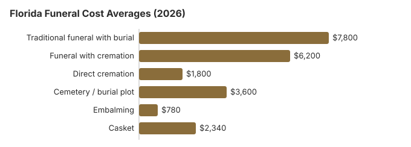

Funeral Costs in Florida: What Families Pay in 2026
Florida Funeral Charges, Line by Line
Individual prices in Florida still vary by provider, and the Florida Board of Funeral, Cemetery, and Consumer Services licenses Florida homes without setting their prices.
| Service | Average Cost | Range |
|---|---|---|
| Traditional funeral with burial | $7,800 | $5,850 – $10,140 |
| Funeral with cremation | $6,200 | $4,960 – $8,060 |
| Direct cremation | $1,800 | $1,260 – $2,520 |
| Cemetery / burial plot | $3,600 | $1,800 – $7,200 |
| Embalming | $780 | $500 – $1,500 |
| Casket | $2,340 | $780 – $6,240 |
Where these numbers come from: Florida funeral homes were not surveyed for this table. Every line is our modelled estimate, good for setting a budget but not a quote, and not professional advice. The method is laid out here, and the disclaimer lists what it cannot tell you.
State sources: Florida Department of Financial Services; Division of Funeral, Cemetery, and Consumer Services; Fla. Stat. §§ 406.50, 406.53.

Federal Protections in Florida
Report a Florida home that ignores the rule to the FTC through ftc.gov; for advice first, try the Funeral Consumers Alliance.
How Florida Differs From Its South Neighbors
Florida heat means a funeral home may raise embalming in the first conversation. In most cases the law does not require it and refrigeration will do. If you are pressed to agree fast, ask whether it is the law or the home's policy; the Department of Financial Services (850-413-3039) can tell you which.
Miami, Tampa, Orlando and Other Florida Metros
Estimated prices in the biggest Florida metros:
Florida Cremation and Burial in Depth
More on each choice in Florida:
Cremation Costs in Florida
Florida cremation at about $1,800 direct or $6,200 with a service, with urns, scattering at sea and memorial ideas.
Burial Costs in Florida
The Florida plot (about $3,600), casket, vault, opening fee and marker, adding up to $17,480 to $21,980.
Who Helps Pay for a Florida Funeral
- County help is limited to unclaimed remains the anatomical board has declined, and only after the county has searched for family and checked national-cemetery eligibility (Fla. Stat. § 406.50).
- Social Security pays $255 once, to a qualifying spouse or child who calls 1-800-772-1213 within two years.
- If you paid for a Florida veteran's funeral, VA Form 21P-530EZ can return up to $1,032 for burial and another $1,032 for a plot when the death, on or after October 1, 2026, was not service-connected (our veteran burial benefits guide has details).
- Medicaid and charity routes for Florida families are explained in our payment assistance page, with a separate page on funerals when the family has nothing.
Educational Resources
- Funeral Consumers AllianceIndependent nonprofit consumer advocacy for funeral rights
- FTC Funeral RuleThe federal rule protecting funeral consumers
- Funeral Insurance GuideCompare final expense and burial insurance options
- Best Burial Insurance CompaniesSide-by-side comparison of top burial insurance providers
- Payment Assistance GuideGovernment programs and financial help for funeral costs
- Insurance Plan ComparisonCompare coverage, premiums, and payout speed across providers
Compare Funeral Costs
- Average Funeral Cost in 2026National cost breakdown with real prices
- Cremation vs. Burial Cost ComparisonSide-by-side price comparison to help you decide
- Funeral Cost BreakdownEvery line item explained: know what you're paying for
- Cheapest Funeral OptionsLower-cost alternatives, with typical price ranges
- Direct Cremation: Most Affordable OptionNFDA 2023 median $2,645 with a family-supplied container (latest available)
- How to Compare Funeral PricesStep-by-step guide to getting the best price
Florida Cremation and Burial Compared
Cremation
- Roughly $1,800 direct
- Roughly $6,200 with a service
- No plot needed
- The family sets the memorial date
- Used for about 62% of Florida deaths
Traditional Burial
- Roughly $7,800 for the service
- Plot about $3,600 extra
- Expect the cemetery to require a vault or liner
- A fixed grave to visit
- Steel casket: Florida dealers quote on both sides of the roughly $2,500 U.S. figure in the NFDA 2023 General Price List Study
Florida Choices From Least to Most Expensive
| Arrangement | About | In plain terms |
|---|---|---|
| Direct cremation | $1,800 | No viewing or ceremony; the cremation waits 48 hours (Fla. Stat. § 872.03; Fla. Stat. § 406.11(1)(c)). |
| Direct burial | $3,900 | Prompt burial with no embalming or viewing; plot and opening are separate cemetery charges. |
| Green burial | $4,290 | No embalming and no vault, at a Florida cemetery that allows natural burial. |
| Cremation + memorial | $6,200 | The cremation first; family and friends gather later |
| Traditional funeral | $7,800 | Visitation, service and committal at the grave |
Charges to Question on a Florida Price List
Check the final Florida bill for charges that were not on the first quote.
- Embalming listed as mandatory: in Florida it seldom is.
Why Funeral Prices Vary in Florida
A Florida quote reflects local rent and wages, how many homes compete nearby, and the steps state rules require. Prices across the South generally sit near or under the $8,300 national median, and in Florida a metro home can charge 10-30% more than a rural one.
At 62%, Florida's cremation rate is 1.4 points below the 63.4% national rate that NFDA projected for 2025.
First Steps After a Death in Florida
Arranging a Florida funeral right now? Work through these in order:
- Pick cremation or burial: cremation in Florida or burial in Florida.
Florida death certificates: fees, speed and who can see the cause
Florida's state Bureau of Vital Statistics, at 1217 North Pearl Street in Jacksonville, charges a $5 search fee that includes one certified copy, and $4 apiece for more copies of that record if you ask for them in the same order. A rush order adds $10. If you do not know the year of death, the bureau charges $2 for each year it searches, up to $50. Through VitalChek, the state's online vendor, the first copy costs $15 (the $5 search plus the $10 rush) and VitalChek adds its own $7 processing fee. Ordinary processing for deaths from 2009 on takes about three to five business days (Florida Department of Health, Bureau of Vital Statistics; checked October 29, 2026).
Any adult can order a Florida death certificate, but the cause of death stays confidential for 50 years. A copy that shows it goes only to the spouse, parent, adult child, grandchild or sibling, to someone who produces a will, insurance policy or other document proving an interest in the estate, or to a person acting for one of them; everyone else gets a copy without it, and photo ID is required for the cause-of-death version. County health departments also issue certificates for deaths from 2009 on, and their fees vary by county.
- Life insurers usually want the copy that shows the cause of death, so order those as the next of kin.
- At $4 each, extra copies on the first order cost less than a second search later.
- The county health department is often the fastest route for a recent death.
Florida's funeral regulator, county help and veterans' cemeteries
The Florida Department of Financial Services licenses funeral directors and establishments in Florida; call 850-413-3039 to check a license or file a complaint. Within that department, the Division of Funeral, Cemetery, and Consumer Services inspects licensed establishments, facilities and cemetery grounds every year, and its licensing reaches beyond funeral directing and embalming to cremation, preneed sales, cemeteries and monument sales.
Florida is not one of the nine states the Funeral Consumers Alliance lists as making families use a funeral director for certain steps, so you choose which services to buy. Cremation has to wait 48 hours after the death (Fla. Stat. § 872.03; Fla. Stat. § 406.11(1)(c)).
When nobody can pay
The state itself pays nothing toward funerals. If a body is unclaimed and the anatomical board turns it down, the board of county commissioners, or a county department it names, may arrange and pay for a burial or cremation, after first looking for relatives and checking whether the person qualifies for a national cemetery (Fla. Stat. § 406.50; Fla. Stat. §§ 406.50, 406.53). Social Security's $255 death payment, which only a qualifying spouse or child can claim, barely dents the $7,800 average Florida funeral in our table.
Eight national cemeteries
Florida has more VA national cemeteries than most states: Barrancas (850-453-4108), Bay Pines (727-319-6479, cremated remains only), Cape Canaveral (321-383-2638), Florida National at Bushnell (352-793-7740), Jacksonville (904-766-5222), Sarasota (877-861-9840), South Florida (561-649-6489) and Tallahassee (850-402-8941). The funeral home books a grave through the VA's National Cemetery Scheduling Office at 800-535-1117.
Your Florida to-do list
- Lay two Florida price lists next to each other and compare them item by item.
- Ask whether refrigeration can replace embalming for the timeline you have in mind.
- If there is no money, talk to the county's indigent burial office before signing with a funeral home.
- For a veteran, find the nearest of the eight national cemeteries and compare it with a private plot.
- Save 850-413-3039 in case a home does not stick to its price list.
Frequently Asked Questions
What will a Florida funeral cost in 2026?
On our estimate a traditional Florida funeral is about $7,800, a little under the $8,300 national median. Your own figure depends on the homes near you, so collect two or three General Price Lists and compare them.
How far apart are cremation and burial in Florida?
At least $6,000. Direct cremation is about $1,800, while a traditional funeral with burial averages $7,800 before the plot and vault are added.
What protects a Florida family buying a funeral?
Under the FTC Funeral Rule you get an itemized price list, phone quotes, and the right to buy only what you choose. The Funeral Consumers Alliance says Florida does not make families use a funeral director for every step. Licensing and complaints sit with the Department of Financial Services, 850-413-3039.
Where does a Florida family save the most?
Get price lists from two or three homes before agreeing to anything. Direct cremation, about $1,800, is the cheapest choice anywhere in the state.
Is embalming required in Florida?
Usually not. It is a violation for a funeral home to say the law requires embalming when it does not, and its price list has to say embalming is only needed in special cases. If a home insists, ask it to cite the rule in writing.
Are Florida funerals cheaper than the US average?
Slightly. NFDA's 2023 national medians are $8,300 for a funeral with viewing and burial and $6,280 with cremation; our Florida estimates are $7,800 and $6,200. Single homes can be far above or below either.
What costs least in Florida?
Direct cremation is the lowest-cost option in Florida, starting at roughly $1,800. Direct burial comes next at around $3,900 and still avoids viewing, ceremony, and embalming, though the $3,600 Florida plot estimate still applies.
How do I find a low-cost Florida funeral home?
Compare the direct cremation and immediate burial lines on three General Price Lists. A casket or urn bought somewhere else must be accepted without an added fee.